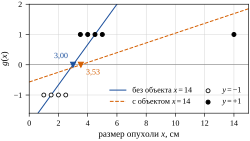
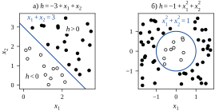
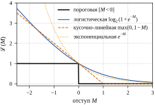
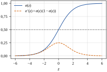

7 Логистическая регрессия
В предыдущих главах решалась задача регрессии. Теперь перейдём к классификации с двумя классами, Y = \{-1, +1\}: есть ли в модуле программы ошибка, вернёт ли заёмщик кредит, злокачественна ли опухоль. Логистическая регрессия — линейная модель, которая не только относит объект к классу, но и оценивает вероятность этого класса. Её обучение сводится к минимизации эмпирического риска с особой функцией потерь, и в этой главе показано, откуда эта функция берётся.
7.1 Почему не подходит линейная регрессия
Можно попробовать обучить на метках \pm 1 обычную линейную регрессию и относить объект к классу +1, если прогноз положителен. На рис. 7.1 так классифицируются опухоли по размеру: четыре доброкачественные (y = -1) размером от 1 до 2,5 см и четыре злокачественные (y = +1) размером от 3,5 до 5 см. Прямая g(x) = \theta_0 + \theta_1 x, найденная методом наименьших квадратов (гл. 3), обращается в нуль при x = 3 см; это и есть порог классификации, и он разделяет классы без ошибок.
Добавим ещё одну злокачественную опухоль размером 14 см. Классифицировать её легко, но прежняя прямая дала бы для неё прогноз около +5, и МНК, приближая прогноз к метке +1, уменьшает наклон прямой. Порог сдвигается до 3,53 см, и опухоль размером 3,5 см теперь ошибочно считается доброкачественной. Квадратичная потеря штрафует модель за то, что на очевидном объекте прогноз «слишком правильный», и ради этого жертвует объектами у границы. Для классификации нужна функция потерь, которая не наказывает уверенные верные ответы.

7.2 Линейный классификатор
Линейный классификатор для двух классов (гл. 1) имеет вид
g(x, \boldsymbol{\theta}) = \operatorname{sign} h(x, \boldsymbol{\theta}), \qquad h(x, \boldsymbol{\theta}) = \langle \boldsymbol{\theta}, \mathbf{x} \rangle = \sum_{j=0}^{n} \theta_j f_j(x),
где h — разделяющая функция. Объекты, для которых h(x, \boldsymbol{\theta}) = 0, образуют разделяющую поверхность: по одну её сторону классификатор отвечает +1, по другую — -1. Для линейной h вид поверхности зависит от числа признаков. Если признаков два, каждый объект — точка на плоскости, и разделяющая поверхность — прямая на этой плоскости. Если признаков три, пространство признаков трёхмерное, и поверхность — плоскость. При n признаках это гиперплоскость — «плоскость» размерности n - 1 в n-мерном пространстве признаков.
Пример. Пусть у объекта два признака, x_1 и x_2, и \boldsymbol{\theta} = (-3;\, 1;\, 1). Тогда h = -3 + x_1 + x_2, и разделяющая поверхность — прямая x_1 + x_2 = 3 (рис. 7.2, а). Объект (1;\, 1) даёт h = -1 и относится к классу -1, объект (2;\, 2) даёт h = 1 и относится к классу +1. Величина |h| пропорциональна расстоянию от объекта до прямой: она показывает, насколько уверенно классификатор относит объект к классу.

Модель линейна по параметрам, но не обязана быть линейной по исходным признакам — как и в полиномиальной регрессии из гл. 3. Если классы разделены окружностью (рис. 7.2, б), возьмём признаки f_1 = x_1^2 и f_2 = x_2^2. При \boldsymbol{\theta} = (-1;\, 1;\, 1) получаем h = -1 + x_1^2 + x_2^2, и разделяющая поверхность — окружность x_1^2 + x_2^2 = 1.
7.3 Отступ и функции потерь
Отступом объекта x_i называют величину
M_i(\boldsymbol{\theta}) = y_i \, h(x_i, \boldsymbol{\theta}).
Отступ положителен, если знак h совпадает с меткой, то есть классификатор отвечает верно, и отрицателен при ошибке. Его модуль — та же уверенность |h|: большой положительный отступ означает уверенный верный ответ, большой отрицательный — грубую ошибку. Благодаря обозначению классов \pm 1 одна формула описывает оба класса.
Индикатор ошибки из гл. 1 через отступ записывается как пороговая функция потерь [M_i < 0], а эмпирический риск — как доля ошибок. Минимизировать её напрямую трудно: функция ступенчатая, её производная почти везде равна нулю, и градиентный спуск (гл. 4) не знает, куда двигаться. Поэтому пороговую функцию заменяют непрерывной функцией \mathcal{L}(M) без скачка, которая лежит не ниже неё (рис. 7.3). Тогда сумма \mathcal{L}(M_i) — верхняя оценка числа ошибок, и, уменьшая её, мы уменьшаем и число ошибок.

Три верхние оценки на рис. 7.3 — логистическая, кусочно-линейная и экспоненциальная — убывают с ростом отступа (кусочно-линейная — до M = 1, дальше она равна нулю). В отличие от пороговой функции, они штрафуют не только ошибки (M < 0), но и неуверенные верные ответы вблизи границы. При большом положительном отступе потеря близка к нулю — именно этого не хватало квадратичной потере в разд. 7.1. Логистическая функция \ln(1 + e^{-M}) (на рисунке — с основанием логарифма 2, чтобы она проходила через точку (0;\, 1); от основания зависит только множитель) приводит к логистической регрессии; кусочно-линейная \max(0,\, 1 - M) — к методу опорных векторов; экспоненциальная e^{-M} используется в бустинге. Выбор логистической функции кажется произвольным, но у неё есть вероятностный смысл, который раскрыт в двух следующих разделах.
7.4 Сигмоида и вероятность класса
Сигмоида (логистическая функция)
\sigma(z) = \frac{1}{1 + e^{-z}}
переводит любое число в интервал (0;\, 1): \sigma(0) = 0{,}5, \sigma(z) \to 1 при z \to +\infty и \sigma(z) \to 0 при z \to -\infty (рис. 7.4). У неё два полезных свойства, которые проверяются прямой подстановкой:
\sigma(-z) = 1 - \sigma(z), \qquad \sigma'(z) = \sigma(z)\bigl(1 - \sigma(z)\bigr).

Логистическая регрессия представляет вероятность класса +1 как сигмоиду от разделяющей функции:
P(y = +1 \mid x) = \sigma\bigl(h(x, \boldsymbol{\theta})\bigr).\tag{7.1}
Чем дальше объект от разделяющей поверхности в сторону класса +1, тем ближе вероятность к единице; на самой поверхности она равна 0,5. Вероятность класса -1 по первому свойству сигмоиды равна 1 - \sigma(h) = \sigma(-h). Обе формулы объединяются в одну:
P(y \mid x) = \sigma\bigl(y \, h(x, \boldsymbol{\theta})\bigr) = \sigma(M), \quad y \in \{-1, +1\}.\tag{7.2}
Вероятность правильного ответа — сигмоида от отступа.
Метки 0 и 1. В scikit-learn и большинстве учебников классы обозначают \tilde y \in \{0, 1\}, где \tilde y = (y + 1)/2. Вероятность класса 1, которую модель предсказывает для объекта x, обозначим \hat p:
\hat p = P(\tilde y = 1 \mid x) = \sigma\bigl(h(x, \boldsymbol{\theta})\bigr).
Это та же вероятность, что в (7.1): событие \tilde y = 1 совпадает с событием y = +1. Знак «крышка» над буквой, как в \hat y, напоминает, что это прогноз модели — её оценка вероятности, а не сама вероятность; для i-го объекта пишем \hat p_i. Вероятность наблюдаемой метки
P(\tilde y \mid x) = \hat p^{\tilde y} (1 - \hat p)^{1 - \tilde y}\tag{7.3}
(при \tilde y = 1 остаётся \hat p, а при \tilde y = 0 остаётся 1 - \hat p). Это та же модель, что (7.2), в другой записи. Чтобы получить класс, вероятность сравнивают с порогом: при пороге 0,5 класс 1 выбирается, если \hat p \ge 0{,}5, то есть h \ge 0, — это прежний классификатор \operatorname{sign} h. Если ошибки разных типов имеют разную цену, порог сдвигают.
Шансы и смысл коэффициентов. Шансы класса — отношение \hat p/(1 - \hat p): шансы 3 означают, что класс 1 втрое вероятнее класса 0. Подставим \hat p = \sigma(h) = 1/(1 + e^{-h}). Тогда 1 - \hat p = e^{-h}/(1 + e^{-h}), знаменатели при делении сокращаются, и шансы равны
\frac{\hat p}{1 - \hat p} = \frac{1}{e^{-h}} = e^{h}.
Логарифмируя, получаем
\ln \frac{\hat p}{1 - \hat p} = h(x, \boldsymbol{\theta}) = \theta_0 + \theta_1 f_1(x) + \ldots + \theta_n f_n(x).
Логарифм шансов называют логитом; логистическая регрессия — линейная модель логита. Отсюда смысл коэффициентов: увеличение признака f_j на единицу при прочих равных прибавляет к логиту \theta_j, то есть умножает шансы на e^{\theta_j}. В примере с \boldsymbol{\theta} = (-3;\, 1;\, 1) объект (1;\, 1) имеет h = -1; вероятность класса 1 для него равна \sigma(-1) \approx 0{,}27, а шансы — e^{-1} \approx 0{,}37; увеличение x_1 на единицу умножает шансы на e \approx 2{,}72, и у объекта (2;\, 1) шансы равны 1, а вероятность — 0,5.
7.5 Максимум правдоподобия
Как подобрать параметры? Естественное требование: модель должна приписывать наблюдаемым в выборке меткам высокую вероятность. Если объекты выборки независимы, вероятность получить все метки сразу равна произведению вероятностей отдельных меток. Эту величину как функцию параметров называют правдоподобием и обозначают L (от англ. likelihood):
L(\boldsymbol{\theta}) = \prod_{i=1}^{\ell} P(y_i \mid x_i, \boldsymbol{\theta}).
Правдоподобие тоже оценивает, насколько параметры согласуются с выборкой, но, в отличие от функционала качества Q (гл. 1), его не минимизируют, а максимизируют; ниже одна задача сведена к другой. Принцип максимума правдоподобия — выбрать параметры, при которых правдоподобие наибольшее. Произведение многих чисел меньше единицы неудобно (оно быстро становится неразличимо малым), поэтому максимизируют логарифм — он превращает произведение в сумму и не меняет точку максимума. Максимизация \ln L равносильна минимизации -\ln L. Подставив (7.2), получаем
-\ln L(\boldsymbol{\theta}) = -\sum_{i=1}^{\ell} \ln \sigma(M_i) = \sum_{i=1}^{\ell} \ln\bigl(1 + e^{-M_i}\bigr).\tag{7.4}
Читаем формулу. Слева — минус логарифм правдоподобия, справа — сумма логистических потерь из разд. 7.3. Значит, Q(\boldsymbol{\theta}) = -\frac{1}{\ell} \ln L(\boldsymbol{\theta}) — эмпирический риск с логистической функцией потерь, и максимизация правдоподобия и минимизация Q — одна и та же задача. Логистическая функция потерь не выбрана произвольно: она равна минус логарифму вероятности, которую модель приписывает правильному ответу. Уверенный верный ответ (\sigma(M) \approx 1) почти ничего не стоит, уверенная ошибка (\sigma(M) \approx 0) стоит очень дорого.
Каждое слагаемое суммы (7.4) — потеря на одном объекте, минус логарифм вероятности его метки: -\ln P(y_i \mid x_i). Если записать эту вероятность через метки \tilde y \in \{0, 1\} по формуле (7.3) и прологарифмировать, получится потеря, которую называют бинарной кросс-энтропией (log-loss):
\mathcal{L} = -\ln P(\tilde y \mid x) = -\bigl[\tilde y \ln \hat p + (1 - \tilde y) \ln(1 - \hat p)\bigr], \quad \hat p = \sigma(h).
Это та же логистическая потеря \ln(1 + e^{-M}), только записанная через \tilde y и \hat p; её среднее по выборке — тот же функционал Q(\boldsymbol{\theta}). Из двух слагаемых ненулевое только одно: при \tilde y = 1 потеря равна -\ln \hat p, а при \tilde y = 0 она равна -\ln(1 - \hat p).
Тот же принцип объясняет и метод наименьших квадратов: если в регрессии шум нормально распределён, y = g(x, \boldsymbol{\theta}) + \varepsilon, \varepsilon \sim N(0, \sigma^2), то минус логарифм вероятности ответа равен (y - g)^2 / (2\sigma^2) плюс константа, и максимум правдоподобия совпадает с минимумом суммы квадратов.
Пример. Сравним по правдоподобию две модели h = \theta_0 + \theta_1 x на трёх объектах с одним признаком: x = 1, 2, 3 и метками -1, +1, +1. Модель \boldsymbol{\theta} = (-3;\, 2) даёт h = -1;\ 1;\ 3 и отступы 1;\ 1;\ 3. Вероятности правильных ответов — \sigma(1) = 0{,}731; 0{,}731; \sigma(3) = 0{,}953, правдоподобие L = 0{,}731 \cdot 0{,}731 \cdot 0{,}953 \approx 0{,}509, а -\ln L = 0{,}313 + 0{,}313 + 0{,}049 = 0{,}675. Модель \boldsymbol{\theta} = (-1{,}5;\, 1) с той же разделяющей точкой x = 1{,}5 даёт отступы 0{,}5;\ 0{,}5;\ 1{,}5, правдоподобие 0{,}317 и -\ln L = 1{,}15. Обе модели классифицируют все объекты верно, но первая увереннее, и правдоподобие её предпочитает.
Продолжим пример: модель \boldsymbol{\theta} = (-6;\, 4) — та же граница, веса вдвое больше — даёт -\ln L = 0{,}256, ещё лучше. Если классы в выборке разделимы, умножение весов на любое число больше единицы увеличивает все отступы и правдоподобие, и минимум (7.4) не достигается: веса растут бесконечно. Это крайний случай переобучения, и защищает от него регуляризация (разд. 7.6).
Градиент. Решения в явном виде у задачи нет, её решают градиентным спуском или более быстрыми методами второго порядка. Вычислим градиент потери на одном объекте в записи с метками \tilde y \in \{0, 1\}. По правилу дифференцирования сложной функции и свойству \sigma' = \sigma(1 - \sigma):
\frac{\partial \mathcal{L}}{\partial h} = -\tilde y \, \frac{\sigma(1 - \sigma)}{\sigma} + (1 - \tilde y) \, \frac{\sigma(1 - \sigma)}{1 - \sigma} = \hat p - \tilde y,
а так как \partial h / \partial \boldsymbol{\theta} = \mathbf{x}, градиент равен (\hat p - \tilde y)\, \mathbf{x}. Для средней потери по выборке
\nabla Q(\boldsymbol{\theta}) = \frac{1}{\ell} \mathbf{F}^{\mathrm{T}} (\hat{\mathbf{p}} - \tilde{\mathbf{y}}),
где \hat{\mathbf{p}} — вектор вероятностей \sigma(h(x_i, \boldsymbol{\theta})). Формула той же формы, что градиент квадратичной потери \frac{2}{\ell} \mathbf{F}^{\mathrm{T}}(\mathbf{F}\boldsymbol{\theta} - \mathbf{y}) из гл. 3: столбцы признаков, умноженные на «ошибки» модели, только ошибка теперь — разность между предсказанной вероятностью и меткой. Функция (7.4) выпукла, поэтому при подходящей регуляризации у неё один минимум, и спуск находит его из любой начальной точки.
7.6 Вероятностный смысл регуляризации
Регуляризацию из гл. 6 тоже можно получить из вероятностных соображений. Будем считать параметры случайными и до наблюдения данных зададим их априорное распределение с плотностью p(\boldsymbol{\theta}) — представление о том, какие значения параметров правдоподобны. Обычно веса считают скорее малыми, чем большими. Выбирают параметры, при которых велико произведение правдоподобия данных и априорной плотности; логарифмируя, получаем задачу
-\ln L(\boldsymbol{\theta}) - \ln p(\boldsymbol{\theta}) \to \min_{\boldsymbol{\theta}}.
Это принцип максимума апостериорной вероятности (maximum a posteriori, MAP): максимизируется апостериорная вероятность параметров при данной выборке, а минимизируемый функционал — её минус логарифм. Первое слагаемое — эмпирический риск, второе играет роль штрафа.
Пусть веса \theta_1, \ldots, \theta_n независимы и распределены нормально со средним 0 и дисперсией C: p(\theta_j) \propto \exp(-\theta_j^2 / (2C)). Тогда -\ln p(\boldsymbol{\theta}) = \|\boldsymbol{\theta}\|_2^2 / (2C) + \text{const} — штраф гребневой регрессии с \lambda = 1/(2C). Если веса распределены по закону Лапласа, p(\theta_j) \propto \exp(-|\theta_j| / C), получается штраф для LASSO \|\boldsymbol{\theta}\|_1 / C. Распределение Лапласа сильнее сосредоточено около нуля, чем нормальное, и это согласуется с тем, что LASSO обнуляет веса.
Читаем формулы. Коэффициент регуляризации обратен
дисперсии априорного распределения: малая дисперсия C означает твёрдую уверенность, что веса
близки к нулю, — сильная регуляризация; большая C — регуляризация слабая. В scikit-learn
логистическая регрессия параметризована именно так: параметр
C класса LogisticRegression — обратный
коэффициент регуляризации (по умолчанию C =
1 со штрафом L2), и при уменьшении C регуляризация
усиливается.
7.7 Несколько классов
Если классов K > 2, Y = \{1, \ldots, K\}, есть два подхода. Один против всех (one-vs-rest): обучают K бинарных классификаторов, k-й отделяет класс k от остальных, и объект относят к классу, чей классификатор дал наибольшую вероятность. Многоклассовая логистическая регрессия заводит для каждого класса свою разделяющую функцию h_k(x) = \langle \boldsymbol{\theta}_k, \mathbf{x} \rangle и переводит их в вероятности функцией softmax:
P(y = k \mid x) = \frac{e^{h_k(x)}}{\sum\limits_{c=1}^{K} e^{h_c(x)}}, \quad k = 1, \ldots, K.
Экспонента делает все величины положительными, а после деления на знаменатель они в сумме дают единицу, как и положено вероятностям. Класс с наибольшей h_k получает наибольшую вероятность. Параметры находят тем же максимумом правдоподобия: потеря на объекте равна -\ln P(y_i \mid x_i) — многоклассовая кросс-энтропия. При K = 2 softmax превращается в сигмоиду от разности h_1 - h_2.
В scikit-learn оба случая обрабатывает класс
LogisticRegression (листинг 7.1). Метод
predict возвращает класс, predict_proba —
вероятности классов, а экспоненты коэффициентов coef_
показывают, во сколько раз меняются шансы при увеличении
стандартизованного признака на одно стандартное отклонение.
Листинг 7.1. Логистическая регрессия в scikit-learn
import numpy as np
from sklearn.linear_model import LogisticRegression
from sklearn.pipeline import make_pipeline
from sklearn.preprocessing import StandardScaler
model = make_pipeline(StandardScaler(),
LogisticRegression(C=1.0))
model.fit(X_train, y_train)
proba = model.predict_proba(X_test)[:, 1] # P(класс 1)
y_pred = model.predict(X_test) # порог 0,5
odds = np.exp(model[-1].coef_) # множители шансовВопросы для самоконтроля
- Почему линейная регрессия плохо подходит для классификации?
- Что такое отступ? Какой знак у отступа при ошибке классификатора?
- Почему пороговую функцию потерь заменяют гладкой?
- Почему вероятность правильного ответа в логистической регрессии равна \sigma(M)?
- Как связаны максимум правдоподобия и минимизация логистической потери?
- Как истолковать коэффициент \theta_j = 0{,}7 логистической регрессии?
- Что происходит с весами логистической регрессии, если классы разделимы, а регуляризация отсутствует?
- Какому априорному распределению весов соответствует штраф L2? L1?
Задачи
Для \boldsymbol{\theta} = (-3;\, 1;\, 1) найдите вероятность класса +1 и шансы для объектов (3;\, 1) и (0;\, 1).
Ответ
для (3;\, 1): h = 1, \hat p = \sigma(1) \approx 0{,}73, шансы e \approx 2{,}72; для (0;\, 1): h = -2, \hat p \approx 0{,}12, шансы e^{-2} \approx 0{,}14.
Вычислите бинарную кросс-энтропию для объекта с меткой \tilde y = 1 при прогнозах \hat p = 0{,}9; 0{,}5; 0{,}1.
Ответ
0{,}105; 0{,}693; 2{,}303 — уверенная ошибка стоит в 22 раза дороже уверенного верного ответа.
Покажите, что при K = 2 softmax даёт P(y = 1 \mid x) = \sigma(h_1 - h_2).
Ответ
разделив числитель и знаменатель на e^{h_1}, получаем 1/\bigl(1 + e^{-(h_1 - h_2)}\bigr) = \sigma(h_1 - h_2).
Сделайте один шаг градиентного спуска для потери на одном объекте x = 2, \tilde y = 1 из \boldsymbol{\theta} = (0;\, 0) при \eta = 0{,}5 (признаки — f_0 = 1 и x).
Ответ
\hat p = 0{,}5, градиент (\hat p - \tilde y)(1;\, 2) = (-0{,}5;\, -1), \boldsymbol{\theta} = (0{,}25;\, 0{,}5).